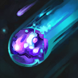

核心裝備
 雷霆風暴
雷霆風暴 死亡之帽
死亡之帽 無限寶珠
無限寶珠 虛空之杖
虛空之杖 中婭沙漏
中婭沙漏
以下為本站 7.2d 校正後的標準配置；實戰仍需依敵方陣容調整。


技能優先：Q > W > E
以技能命中敵方英雄或擊殺單位可累積層數，永久提高魔法攻擊，重複命中英雄也能成長。
向前發射黑暗能量，傷害路徑上的目標；用此技能擊殺單位或命中英雄可取得被動層數。｜7.2d：黑暗祭祀施放距離提高至 9。

短暫延遲後從天際降下黑暗物質造成範圍魔法傷害；被動層數會縮短此技能冷卻。
延遲生成圓形牢籠，穿過邊緣的敵人會被暈眩；可用來封路、保排或固定二技落點。
對指定敵方英雄造成高額魔法傷害，目標已損失生命越多傷害越高，適合完成單點處決。
3技牢籠 → 2技預判 → 1技命中 → 4技處決
先用三技限制走位，預判敵人撞牆位置放二技，再接一技與大絕完成收尾。
1技補刀 → 保持距離 → 命中英雄
優先用一技收掉低血量小兵並兼顧消耗，不要為了疊層走進敵方突進範圍。
3技封入口 → 2技壓區 → 1技消耗 → 4技收殘血
牢籠先封住狹窄入口，再用二技迫使敵人分散；大絕只交給能確定擊殺的目標。
用一技同時補刀與消耗，穩定累積極度邪惡層數。三技冷卻較長，敵方刺客未交位移前不要只為了換血空放，優先保護自己與兵線。
物件團先用三技封住入口或切割陣型，敵人撞上牆後再接二技與一技。大絕對低生命目標傷害更高，等隊友先壓血後再用來處決。
永久魔攻成長後任何控制命中都可能完成擊殺，站在後排以三技保護輸出空間。不要只盯著後排，大絕收掉突進前排也能讓己方核心安全輸出。
對局名單是本站依英雄機制與目前配置整理的參考，不等同固定勝率。
中路優先處理爆發、控制與抗性問題；標準輸出核心不因單一威脅整套推翻。
觸發：對線或團戰有能直接貼近你的刺客／爆發核心，常在完成第一輪輸出前死亡。
中婭沙漏兼顧魔攻與物防，主動凝滯能直接避開致命爆發。
骨甲降低接續傷害，適合換掉較貪輸出的副系符文。
觸發：敵方有多個關鍵硬控，會讓你無法安全站位或施放完整連段。
堅毅提供韌性，受到硬控時也能短暫提高雙防。
觸發：敵方前排多，團戰需要你持續處理高生命目標，而不是只秒後排。
用百分比生命灼燒或魔法穿透提高長時間處理高血量／高魔防前排的效率。
觸發：敵方治療、吸血或回復讓你的消耗與爆發很難真正壓低血線。
黑魔禁書能由魔法傷害穩定施加重創，適合法師與軟輔處理大量治療。
觸發：敵方核心已經針對你的主要傷害類型堆高物防或魔防。
你不是隊伍主要穿透來源，或標準配置已經有足夠百分比穿透／削抗。
提醒：「坦克多」看的是高生命前排；「抗性高」則是對方已經明確堆高物防／魔防，兩種情境不一定相同。
7.2a 中路第二批正式版：技能名稱與核心機制依 Riot Games 台灣《激鬥峽谷》官方英雄頁校正；版本基準採官方 7.2 與 7.2a 更新公告。Tier、出裝、符文、對局與實戰節奏為本站依中路環境整理的綜合配置。｜v60：完整套用阿璃中路固定母版。｜v90：7.2d：黑暗祭祀施放距離由 7.75 提高至 9。
本站於 2026-08-27 依 Patch 7.2d 重新檢查此配置。 Tier、出裝、符文與對局屬於 Wild Rift Guide 的整理與分析，不是 Riot Games 官方推薦；版本改動後會再依官方公告與實戰資料校正。